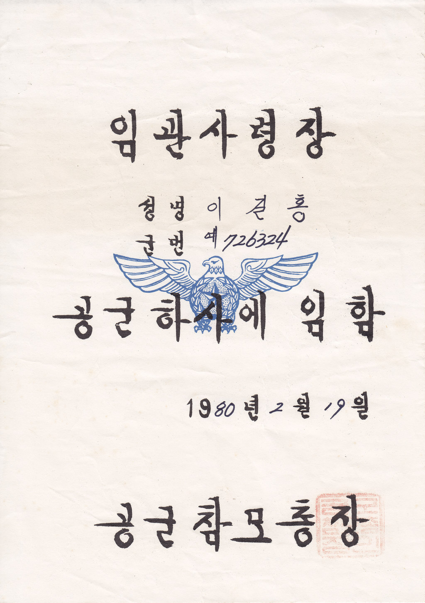
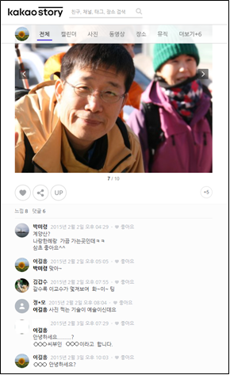

군대시절 동료이야기
금오공고는 전국에서 학생을 모집하여 국가에서 무료로 공부시켜주고, 먹여주고, 입혀주고, 재워준다. 그대신, 하사관으로 군대 5년을 보내야 한다. 육군에 주로 많이 가고, 일부는 공군과 해군에 갔다. 공군이 제일 인기가 많았는데, 깨끗한 이미지가 있었고, 나름 편해 보였기 때문이다. 해군에 제일 인기가 적었고, 지원을 하면 성적순으로 잘랐다. 나는 금오공고 전자과를 졸업하고, 기술하사관으로 공군에 입대하였다. 1980년 2월 19일 하사관 임명장을 받고, 2월 20일 고등학교 졸업식을 하고, 2월 28일 대전의 공군기술학교에 입대하였다. 말이 학교지 공군의 교육사령부였는데, 1988년 경상남도 진주시로 이전하였다고 한다. 그 전까지는 대전 서구 둔산동(탄방동 보라매공원 일대)에 자리 잡고 있었다. 외출할 때 는 택시를 타고 서대전역이나 대전 고속버스 터미널에 갔다. 귀대할 때도 마찬가지였다. 버스가 있는지 모르겠는데, 많이 돌아가거나 기다려서 모두 그렇게 택시로 이동했다. 그곳에서 약 3개월간의 실기 교육을 받고 전국의 예하 부대로 배치된다. 우리는 일반인으로 지원하는 기수인 102기와 함께 같이 교육을 받았다. 102기는 2월 1일 하사관에 임용된 기수이다. 보통 하사관은 2개월마다 한 기수가 나와서, 우리는 같은 2월 임용이므로 동기에 해당한다고 볼 수 있었다. 실제로 공군기술고등학교라는 다른 특수학교 동기 졸업생들은 2월 1일 임용을 하고 입대를 하여, 이들도 102기와 같은 동기로 생활하였다. 그런데, 102기에서 임용 날자를 따지며, 자기들이 선배기수라고 앞으로 지기들에게 인사하고 고참 대우를 하라고 시비를 걸어왔다. 교육대에 들어온 102기는 30여명, 우리 금오공고 동기들도 30여명, 이 두 그룹 사이에 전운이 고조되고 마침내 단체 패싸음 직전까지 갔다. 이 사실이 교육단에 알려지고, 우리는 같이 엄청 기합을 받고, 동기이니 앞으로 그런 일로 대립하지 말라는 결론으로 종결이 났다. 이 문제는 여기서 잠시 끝났지만, 완전히 끝난 것은 아니다. 이 문제는 제대할때까지 알게 모르게 계속 이어진다. 사실상 우리 나이가 평균 2살 정도 어리므로, 후일 일반 하사관 후배들도 우리 말을 안 듣고 무시하는 문제가 생기기도 한다. 후에 자대 배치를 받았을 때, 1980년 4월 1일 임관한 103기가 내 말을 안듣고 기어 올랐는데, 이를 제압한 적이 있다.
그때 문제의 그 102기 하사도 같이 교육을 받았다. 교육을 받을 때는 같은 호실에 있지 않아 잘 몰랐었다. 동기 문제로 싸움을 할 때, 102기 중 언성을 높였던 하사 중의 하나인 것 같기도 하다. 그 친구가 눈에 띈 것은 제식훈련에서 였다. 기술 교육을 받는 부대였지만, 그래도 군대인지라 중간 중간에 운동장에 집합해서 군사 훈련과 태권도 훈련 등을 병행하였다. 문제는 제식훈련이었다. 제식훈련은 단체로 행진하면서 방향 전환 등을 하는 집체 훈련이다. 제자리에서 좌향 좌, 우향우, 뒤로 돌아 같은 훈련을 한다. 총을 가지고 할 때도 있고, 총 없이 할 때도 있다. 제자리 걸을을 하면서 하던가 혹은 전체가 여러 줄을 같이 맞추면서 걸어가다가 방향 전환을 하는 훈련도 있는데, 뒤로 돌아 가~ 우향 앞으로 가~ 좌향 앞으로 가 등의 방향 전환을 훈련 한다. 그 친구는 동작이 특이했는데, 보통 걸을 때, 다리와 팔은 반대 방향으로 움직인다. 왼발을 딧고 오른 발을 앞으로 옮기면 완 팔이 앞으로 가고, 오른발이 앞으로 가면 왼 팔이 앞으로 가는 것이 기본이다. 그런데 이 친구는 왼발이 앞으로 갈 때 완 팔이 앞으로 가고, 오른발이 앞으로 갈 때 오른 팔이 앞으로 가는 방식으로 걸음을 걸었다. 이는 금방 눈에 띄고, 바로 지적이 된다. 그 모습이 좀 우스꽝스러워서 보는 사람 모두는 모두 킥킥거렸다. 그 하사는 따로 기합을 받고 제대로 걷는 듯 하다가 다시 원래의 폼으로 되돌아가곤 했다. 모든 면에서 특이했고, 그 친구로 인해 전체가 기합을 받는 경우가 종종 있었다. 교육대 졸업을 할 때, 나는 최우수 성적을 받았고, 그 하사는 전체 꼴찌였다.
사실, 이 교육부대에는 한번 더 교육을 오게 된다. 약 2년 후 고급과정을 들어오게 된 것이었는데, 처음 교육 받았을 때의 금오공고 동기들이 거의 다 같이 들어 왔다. 이 과정에서는 보다 전문적인 통신장비 교육을 받는 것인데, 우리는 모두 이 교육을 싫어했다. 교육을 받는 것 자체가 지루하고 힘들었고, 교육 이후에 얼마 있다가 대부분 다 제대를 할 예정이었기 때문에 이 교육이 무슨 소용이 있나하고 모두 반문을 하였다. 우리는 급기야 단체로 교육을 중단하고 자대로 보내줄 것을 요구하기에 이르렀다. 교육대 상사들은 급기야 우리를 이렇게 집단 항명을 하는 경우 징계를 받게 되고, 그러면 앞으로의 부대 생활이 힘들어 진다고 설득했고, 우리는 할 수 없이 받아 들이고 끝날때까지 교육을 받기로 하였다. 교육생 중에는 우리 교육대대에 근무하는 초임 교수요원도 있었다. 교육대대 교수 요원들은 이 초임 교수요원이 1등으로 졸업하기를 원하고 일부는 다양한 지원을 했지만, 1등은 내가 했고, 그 친구는 2등을 했다.
고급과정에서의 추억이 하나 더 있는데, 우리가 교육을 받는 도중 금오공대 졸업생들이 졸업 후에 소위 임관을 하고 바로 교육사령부로 교육을 들어왔는데, 우리랑 시간이 겹쳐졌다. 금오공대 졸업 후에 장교로 9년 근무하는 ROTC가 있었는데, 이들 출신들이 여기로 교육을 받으러 온 것이다. 그 중에는 금오공고 5기 동기생들이 섞여 있었다. 사실 고등학교때에 사관학교반이랑 금오공대 특수반이 있었는데, 사관학교반은 육사, 공사, 해사에 지원하기를 원하는 친구들로 구성되고, 금오공대반은 공고 졸업후 금오공대에 지원하는 특수 반이었다. 지원자 중 성적으로 짤라서 반을 구성하고 여기서 일반 수업과는 따로 공부를 하였는데, 나는 군생활을 오래하기 싫어서 지원을 하지 않았다. 금오공고를 졸업하면 하사관 5년, 금오공대 진학하면 장교 9년, 사관학교를 진학하면 10년 이상을 군생활을 해야 하므로 나는 5년으로 끝내겠다는 마음으로 따로 지원을 하지 않았었다. 우리 동기들은 모두 똑똑해서 육사, 공사, 해사 모두 동기들이 수석 졸업을 했다고 하고, 각각 모두 별을 달고 제대를 했다. 공사에 간 동기는 나중에 내가 공부한 학교에서 파견나와 학업을 한 경우도 있었다. 나도 처음에는 몰랐는데, 와이프가 아런 사람 아느냐고 물어봐서 알게 되었는데, 그 친구에게는 알리지 않고, 졸업식날 와이프가 그 동기에게 얘기를 했는데, 바로 나한테 전화해서 왜 모른척했냐고 아쉬워했던 기억이 있다. 어쨋든 금오공고 소위 동기들과 함께 교육을 들어온 다른 신임 소위들이 식당 앞에서 군기를 잡는답시고, 일반 병 뿐만 아니라 우리 고참 하사관들에게도 깍듯이 경례하고 예의를 갖출 것을 요구 하였다. 그래서 우리는 식사 기간을 아주 빨리 하거나, 늦게 하거나, 안되면 뒷문으로 들어가거나 하는 방식으로 이런 소나기를 피했다. 일과후에 소위 동기들을 만나 왜 그러느냐고 하소연을 했고, 동기 소위 친구들은 자기들도 안그러고 싶다면서 적당히 피하라고 얘기를 해주었다. 실제로 동기 친구들은 식당앞에 서있는 이런 행동을 하지는 않았다.
하사 임관후 기술 교육을 종료하고, 우리는 각각 자대 배치를 받았다. 자대 배치는 위에서 알아서 정하였고, 우리는 결과에 따라, 각각 자대로 이동했다. 더블빽에 모든 짐을 실고, 군용 열차를 타고 평택 공군 부대로 이동했다. 전체 중에서 6명이 같은 대대로 배치되었는데, 그 하사도 나와 같은 부대로 배치를 받았다. 부대에 배치되면, 가장 먼저 하는 일이 대대장에게 소속 배치 신고를 하는 일이다. 여섯명이 같이 옆으로 대대장 앞에 서서 신고를 하는데, 가장 왼쪽에 군번이 가장 빠른자가 말로 신고를 하고, 나머지는 마지막에 충성~ 구호만 같이하면 되는 거였다. 문제는 가장 빠른 군번이 그 하사였다. 대대장에게 신고하기 전에 미리 사전에 연습을 하였다. “신고합니다.” 선임자가 “하사 ○○○”하면, 다음 군번이 “하사 ○○○”, 이렇게 마지막까지 다 자신의 아름을 대면, 선임자가 “이상 6명은 1980년○월○일부로 제○○○대대 전술이동무선통신장비정비및운용하사관으로 명 받았습니다. 이에 신고합니다.”하고 모두 다 같이 “충성~” 이렇게 신고를 해야 하는데, 이 친구가 우리의 보직명인 ‘전술이동무선통신장비정비및운용하사관’ 이 부분에서 자꾸 틀리고 못하는 것이다. 사실 좀 길긴 했다. 전략은 목적 달성을 위한 전체적인 계획과 방향으로 거시적이고 장기간의 지속적인 계획이고, 전술은 전략을 실현하기 위한 구체적, 단기적이고 실제적인 행동 기술이다. 우리의 업무는 무선의 통신 장비를 이동하면서 무너진 통신망을 북구하고, 작전에서 임시로 통신망을 만들어 작전이나 훈련의 업무를 지원하고, 평상시에는 부대에서 장비를 정비하는 업무를 담당하는 것이다. 신고 연습에서 틀리면 연습을 시키던 상관이 우리를 단체 기합을 주고, 다시 연습~ 몇 번을 연습한 이후에 겨우 대대장 앞에서 신고를 하였는데, 그 때도 틀려서 다시 했던 것으로 기억한다.
자대 배치 후에 부대내 내무반에 사물함과 자리를 받았다. 그 부대내에 하사관이 많아서 병들이 쓰는 내부반과 분리되어 하사관들만 따로 쓰는 호실이 4개 정도 있었다. 우리 동기들은 각각의 호실로 분산 배치되어 그 동기 하사와 나는 다른 호실로 배정을 받았다. 우리 동기가 5명이었으므로 한 호실에 한두명씩 나누어 배치된 것이다. 하사 복무 기간이 2년 6개월이 지나거나 중사 진급을 하면 외부에서 생활하며 출퇴근을 하는데, 그 그간 이하의 하사관들은 군내 병영에서 생활을 한다. 같은 내무반 건물이지만 일반 병들과는 문으로 분리된 곳에서 따로 하사관들이 생활을 하는 구조였다. 각 호실은 기수에 따라 고참기수가 창가쪽을 쓰고, 말참이 복도쪽에 자리를 잡았다. 낮에는 특기별로 각 사무실이나 장비가 있는 곳에서 일을 하고, 저녁에는 내무반으로 와서 청소하고 점호를 받고, 10시면 취침을 하였다. 하사관의 기강이 무척 쎄서 말참은 힘든 내무 생활을 하였다. 내무 생활은 사이트 파견 포함 2년 6개월동안 지속이 되었고, 그 이후에는 부대 인근 시내에 방을 얻어 생활하면서 제대할 때까지 영외 생활을 하며 출퇴근을 하였다.
우리 동기는 같은 특기이므로 같은 대대에서 일을 하고 생활을 하였다. 평소 장비를 교육받고, 정비하고, 훈련하고, 장비를 청소하고 관리하는 일을 하고, 때되면 장비를 가지고 출동을 하면서 훈련을 하였다. 주기적으로 출동 훈련을 하였는데, 한 번 출동하면 몇일이 걸리기도 하고, 어떤 경우에는 보름 이상 한 경우도 있었다. 대대내의 하사관들과 병을 조합하여 여러 출동 팀을 만들었는데, 보통 팀장은 상사 혹은 고참 중사들이었다. 상사는 하사 임용 이후 최하 9년 이상의 경력이 있는 사람들이다. 그나마 진급이 늦어지면 더 오래 걸린다. 대부분 진급이 제때 이루어지지 않고 탈락하는 경우가 많아서 그보다는 더 오래 걸리는 편이다. 우리 동기는 대부분 다른 팀으로 나뉘어 진다. 각 팀은 상사 혹은 중사 1명, 하사 1명, 병 1-2명, 그리고 발전병이 하나 더 있다. 또, 실제 출동할 때는 수송대에서 수송병이 3~5명 더 추가된다. 한 팀마다 장비, 안테나, 발전기 1~2대 등이 필요하기 때문이다.
어느 날 갑자기 내무반에 모두 집합하여 사물함 점검이 실시되었다. 한 신임하사관의 전투화가 사라진 것이다. 모든 내무반의 하사관들은 자신의 침상에 사물함의 모든 물픔을 내려 놓아 점검을 받았다. 보통 군화에는 끝 안쪽에 있는 가죽 안쪽(보통 군화의 혀, 또는 혓바닦이라고 부른다)에 자신의 군번과 이름을 적는다. 따라서, 모든 하사관의 군화 혓바닦에서 이름을 확인하였다. 그런데, 그 친구의 군화 혓바닦이 잘려져 있는 것이다. 점검하던 선임자가 왜 혓바닦이 없나고 하니, 그 친구가 무슨 이유를 대며 잘랐다는 것이었다. 우리 모두는 그 친구가 범인인 것을 확신하였으나, 본인이 아니라고 끝까지 주장하고, 또 증명을 할 수가 없기에 그냥 넘어간 것으로 기억한다.
군에서의 겨울은 춥다. 밖에서도 같이 춥겠지만, 군에서의 겨울은 더 춥다. 따듯한 옷이 부족하고, 보통 밖에서 훈련도 하고 작업을 많이 하므로 더 그렇게 느껴지는 것 같다. 어느 해 겨울인가 내 겨울 잠바를 빨려고 뜨거운 물에 넣었다가 잠바 겉이 눌고 변색이 되어 입기가 좀 그랬다. 잠바 외피를 새것으로 바꾸는 비용도 만만찮아서 그냥 시골에 갔다 놓았는데, 아버지가 겨울에 그 옷을 그냥 입고 다니셨다. 어느날 상사 고참이 새 잠바를 압고 출근을 하였다. 그 하사가 그 상사에게 전에 입던 잠바 어쨋느냐고 불었다. 그 상사는 그냥 집에 있다라고 했는데, 갑자기 그 친구가 나에게 주라고 하니, 그 상사가 화를 내며 니가 뭔데 주라마라 하느냐고 화를 낸 적이 있다. 나는 내가 부탁을 하지도 않았는데, 그 친구가 그런 말을 하는 바람에 나까지 곤란해 한 적이 있었다.
군에서의 생황에서 비슷한 일이 많아서 그 친구 대하기가 항상 조심스러웠다. 어떤때는 갑자기 화를 내고, 갑자기 띄워주기도 하고, 모르는 것도 아는 척, 안끼어야 할 때 끼어서 문제 일으키기 등의 일이 많았던 것 같다. 한번은 외출을 했다가 돌아와서는 자신이 외출을 해서 서울 모 건물 입구 유리 회전문을 못보고 들어가려다 부딧히는 바람에 충돌을 했는데, 유리가 박살이 났다고 했다. 우리 모두는 그 유리가 그렇게 쉽게 박살이 나지는 않을 거라고 이구동성으로 말 했고, 그 친구는 자기 말이 맞다고 계속 주장했다. 부대에서의 생활이 오래 되어, 우리 동기는 모두 영외 생활을 했는데, 아침에 출근버스에 안늣기 위해 알람을 키고 자곤 했는데, 어느날 알람을 꺼도 계속 소리가 나서, 알람을 이불속에 넣고 소리가 끝날 때까지 몸으로 덮었다고 한 적이 있다. 우리 모두는 깔갈 웃었고, 한 동기가 그럴 때 시계의 시간을 바꾸면 금방 소리가 끝날텐데 하며 웃은 적이 있었다.
군에서 오래 복무하는 사람은 장기 하사관이나 군무원 등이 있다. 이런 사람들 중에는 좀 엉뚱한 사람들이 있다. 한 사람은 중사 였는데, 진급이 매우 더딘 사람이었다. 이 사람은 틈만 나면 졸았다. 기술 교육때도 졸고, 정훈 교육때도 졸고, 부대장 훈시때도 졸았다. 언젠가 정훈 교육이 있었는데, 모든 부대원이 정훈 교육장에 모여 한 시간 이상 정훈 교육을 받았다. 이 날도 이사람은 내내 졸았다. 정훈 교육이 끝나고 우리는 모두 각기 사무실로 돌아 갔다. 그런데, 이 사람은 같이 사무실로 걸어가는 중에도 졸고 있었다. 아직 총각이었기에 우리는 이거 결혼식장에서 사회자가 축사를 할때도 조는 것 아니야? 하고 걱정을 하였다. 마침내 그 사람이 청첩장을 돌렸다. 결혼을 하게 된 것이다. 결혼식장은 성당에서 치렀다. 우리는 모두 축하하기 위해 성당 예식에 참가하였다. 결혼식이 진행되자 우리는 모두 걱정을 하고 있었다. 그런데, 이날 신랑은 졸지 않았다. 아니, 졸 수가 없었다. 신부님이 진행을 하는데, 수시로 일어나라, 기도하라, 앉아라를 반복하는 것이다. 이렇게 해서 신랑은 졸지 않고 성공적으로 경혼식을 잘 마치게 되었다. 군에서 하사관 복무가 5년이 지나 제대를 신청해도 받아들여지지 않는 경우도 있다. 한 하사는 거의 10년이 되어가는데도 제대를 못하고 있었다. 이 사람은 신앙심이 깊은지 교회에 나갔는데, 수시로 우리를 집합시카고 주머니에 있는 동전을 모두 내 놓으라고 했다. 우리가 주머니를 털어 동전을 주면, 그 하사는 그것을 교회에 바친다고 했다. 또, 주머니 검사를 해서, 동전이 나오면 아주 화를 많이 냈다. 우리는 또라이라고 불렀는데, 이 사람이 원래부터 그랬는지, 제대를 못해서 그랬는지, 일부러 그런 행동을 해서 제대를 당하려고 했는지는 확실하지 않았다. 아뭏든 그 사람은 내가 제대를 할 때까지도 제대를 못하고 근무를 했다. 군무원은 주로 하사관 생활을 하다가 제대하고 다시 군무원으로 지원해서 근무하는 사람들이다. 이들은 주로 기술직이 많았고, 하사관 생활보다는 딱딱한 군의 규율에서 좀 더 자유롭게 일할 수 있다는 장점이 있었다. 금오공고 동기 중에도 제대 후 군무원으로 계속 근무하는 친구도 있었다. 또, 영어를 잘해서 미군부대 군무원으로 있던 동기도 있는데, 우리나라 군무원보다 월급이 훨씬 많았다고 한다. 부대에는 방위도 많았다. 이들은 주로 부대 주변에 사는 사람들로 출퇴근을 하며 부내 내 각종 잡일을 하였다. 이들의 근무 기간을 짧았다. 부대에서 근무하는 동안 새로운 방위병이 들어와서 신고를 했다. 얼마가 지나면 제대한다고 인사를 한다. 도 새 방위가 와서 신고를 한다. 또 그 방위는 시간이 되어 제대를 했다. 몇 번을 그러다 보내 내가 제대할 때가 드디어 왔다.
나는 5년 군생활을 하면서 대학 입학 수능 공부를 해서 3번만에 입학을 하였다. 처음 시험을 보았을 때는 성적이 만족스럽지 않아 원서도 안냈다. 두 번째 시험에서는 2지망 학과에 합격이 되어 등록을 안했다. 어머니는 일단 등록을 하고, 나중에 원하는 곳에 입학을 하면 안가면 되지 않느냐며 등록을 극구 원하셨지만, 나는 자신감도 있고 버려질 등록금도 아까워서 등록을 하지 않았다. 사살 거기서도 열심히 하면 비슷할 테인데, 지금 근무하는 곳 다른과에 내가 등록을 안했던 그 과에서 공부한 교수님도 있긴 하다. 어쨌든 그래도 세 번째에는 드디어 원하는 1지망 전자과에 합격을 해서 입학 등록을 하고 연기 신청을 했는데, 아직 제대하려면 2년이 더 남은 상황이었다. 나의 입학 소식이 알려지자 다른 영외 군인들이 서울 등 외부 대학교나 학원의 컴퓨터 과정에 등록하여 야간에 공부를 하기도 했다. 5년이 지나고 드디어 제대 날자가 다가왔다. 나는 제대 신청서를 제출했는데, 대대장이 면담을 하면서 군에 계속 근무를 하라는 것이었다. 나는 내 꿈을 실현하기위해 반드시 제대를 해서 대학을 가고 박사까지 해야 한다고 대대장에게 사정을 했다. 사실 그때는 대학 졸업만 해도 그것으로 만족하고 박사는 꿈에도 꾸지 못했는데, 대대장이 그러는 바람에 일부러 말을 꾸며낸 것이었는데, 나중에 결국 박사까지 하게 되었다니, 내가 공부를 계속해서 박사까지 하게 된 것은 그 때의 사건이 그래도 조금은 있던 것이 아닌가 하는 생각도 하게 된다. 실제로는 대학을 졸업할 때에 많은 부족함을 느껴 더 공부하기 위해 석사과정을 지원했다. 회사에서 지원을 해 주기에 가능한 일이었다. 석사를 마쳐도 공부에 대한 갈증은 풀리지 않았고, 결국에 박사과정까지 하게 된다.
제대를 하며 모든 군대 동기들과 헤어지게 된다. 그중에 한 동기는 군 생활을 계속하고, 나머지는 모두 제대를 하여 사회로 나갔다. 나는 제대 후 바로 대학에 등록을 하고 대학 생활을 하였다. 전자과에는 2개 반이 있었고, 학생들의 반 이상은 재수, 삼수 이상을 한 학생들이다. 일부는 군을 다녀온 학생들도 있었다. 나는 주로 그 복학생들과 어울렸는데, 군에 안간 어린 학생들과도 친하게 잘 지냈는데 그 학생들은 나를 형으로 불렀다. 어느 날 나를 따르던 미필 학생이 자기 매형이 나를 안다고 했다는 것이다. 내가 그 학생에게 공군에서 5년 생활을 해서 대학에 늦게 들어왔다고 얘기했는데, 그 친구 누님이 곧 결혼하는데 매형될 사람이 공군에 5년 근무를 했고, 그래서 그 미필도 우리과에 비슷한 형이 있다고 얘기를 하는 과정에 내 이름을 얘기하면서 알게 되었다는 것이다. 그 미필 학생 매형이 바로 군에서 같이 보냈던 문제의 그 친구였다. 그 미필학생은 자기 누님 결혼 청첩장을 나에게 전해 줬고, 나는 군 친구 결혼식장에 찾아 갔다. 결혼식장에 가면 다른 군 동기들도 볼 수 있을 줄 알았다. 그런데, 막상 결혼식장에 가 보니, 친구는 단 2명 뿐이었다. 나와 동네 친구 하나. 하객도 별로 없었다. 성격에 문제가 많아 친구가 없는 것 같았다. 그 이후로 그 친구를 만났는지 안 만났는지 기억에 별로 없다. 다만, 대학 미필 동생은 졸업할 때까지 자주 봤다. 시험을 보면 서로 점수를 비교하고 했다. 항상 내가 그 동생보다는 높은 점수를 받아서 그 동생은 나를 항상 부러워하곤 했다. 나는 대기업 회사 연구소로 들어 갔고, 그 동생은 외국 유학을 해서 나중에 우리가 다니던 모교 대학의 그 학과에 교수님으로 오게 된다.
회사로 오면서 그 친구와의 연결은 아주 끊기게 된다. 나는 연구소 근처에 집을 하나 얻어서 생활하였다. 밥은 모두 회사에서 해결하였다. 회사가 문을 닫는 주말에는 밖의 식당에서 사먹거나 집에서 라면을 끓여 먹기도 하였다. 저녁에는 회사 동료와 맥주도 마시고 당구도 치고 노래방도 가고 그렇게 시간을 보냈다. 어느날 우리 부서 내 옆 팀의 팀장이 나를 불렀다. 그 팀장이 자기 빌라 2층에 사는 사람이 나를 안다는 것이다. 그 사람이 바로 문제의 그 군대 동기였다. 아~ 우리 인연이 계속 이어졌다. 그 친구는 나를 계속 찾아 왔다. 한두번은 그 친구 와이프랑 같이 술도 마셨다. 그 친구 부부는 여러번 사업에 도전을 해서 실패를 경험했다고 한다. 그래도 경험도 하고 하고 싶은 일을 해서 후회는 없다고 했다. 지금은 각기 다른 직장을 다니는 것 같았다. 그 친구는 모 공장에서 여공들을 관리하는 일을 했다고 했는데, 어느 날 직장에서 짤렸다고 했다. 한 여공을 패서 그게 문제가 되어 그만 두었다고 했다. 그러면서 나를 자꾸 찾아 왔다. 우리집에도 가보자고 성화해서 한두번 우리집에서 술도 마셨다. 그러던 어느날, 회사에서 돌아오니, 집 문이 열려 있었다. 문은 열쇄로 잠그었느데, 창문으로 들어왔다가 문으로 나간 것 같았다. 방에 들어가보니 방안이 어수선하게 늘어져 있었다. 다행히 집안에 귀중품이 없어 털린 것은 없어 보였다. 그래도 기분이 묘하고 안 좋았다. 일정 기간 긴장하면서 살았던 것 같다. 그 친구일 것 같다는 생각이 들었다. 수시로 만나자고 하던 그 친구는 그 일 이후로 연락이 없었다. 그 것도 그 친구가 범인일 것으라는 확신을 준 이유중의 하나이다.
회사에 있으면서 대학 연구실 박사과정에 입학하였다. 회사에 일주일에 2번 정도 학교에 갈 수 있도록 요청하였지만, 회사는 거절하였다. 학교에서도 파트타임 박사과정보다 연구실에 계속 있는 전일제를 요구하였다. 나는 대학교 4학년때 등록금 2학기를 회사로부터 장학금으로 받고, 대학원 석사 2년은 등록금과 매월 20만원 정도의 장학금을 받았다. 총 3년의 기간을 장학금을 받았으므로 2배의 기간, 즉 6년의 회사 생활을 요구했다. 그대 당시는 4년의 회사 생활을 한 때였으므로 2년이 모자맀다. 내가 그만두겠다고 하자 회사는 2년치의 배상을 요구했다. 나는 장학금으로 준 것을 요구할 수 없는 것이 아니냐고 따져 물었다. 민사상으로 회사가 요구할 수 없는 것이었지만, 회사에서 그럴 경우 다른 동료에게 피해가 간다고 반협박을 하는 바람에 협상을 통해 요구 액수의 반을 물어주었다. 회사를 나와서 박사 과정에 입학을 하고 30대 후반을 학교에서 보냈다. 4년6개월의 박사과정과 6개월의 시간강사 후에 현 직장에 자리를 잡았다. 시간이 흘러 카카오톡이 유행하고 2012년에는 카카오스토리가 등장하였다. 나도 카카오스토리에 사진을 올리며 글을 올렸다. 주로 친구들과 산에 가서 찍은 사진이 대부분이었다. 2015년에 올린 사진에 누군가가 댓글을 달았는데, 그 군대 동기 친구의 부인이라며 글을 달았다. “안녕하세요.........? ○○○씨부인 ○○○이라고 합니다.” 나는 깜짝 놀랐다. 아니, 어떻게~? 놀라움을 금치 못하며 나는 “안녕하세요?”라고 짧게 답을 달았다. 그 이후 더 이상의 연락은 없었다.
군에서 만난 인연이 사회로 이어진 경우가 하나 더 있었다. 내가 자대에서 근무할 때 나중에 새로 우리 중대 중대장이 왔는데, 계급은 중위였고 나이는 나와 같았다. 얘기를 해 보니 이 중위는 금오공고를 지원했었는데, 안되어서 일반 고등학교에 진학 후에 항공대를 졸업하고, RORC를 통해 장교로 온 것이었다. 이 장교는 인성이 좋아서 나랑 친하게 지냈는데, 나에게 부대원 교육을 부탁해서 하기도 했다. 제대후 나는 대학을 마친후에 회사 연구소에 근무했는데, 우리가 설계하고 만든 통신 네트워크 장비를 생산할 구미 공장에 가서 현장 방문을 한 경우가 있었다. 그런데, 공장에도 생산기술연구소라는 곳이 있어 여기에서도 생산에 필요한 연구를 하는 모양이었느데, 여기에 그 중위가 제대후 같은 회사에 입사해서 이곳 연구소에서 근무를 하고 있었다. 우리는 서로 알아보고 반갑게 인사를 하고, 옛날 얘기도 나누었던 기억이 있다. 공장에서 만난 이후 다시 만난 기억은 별로 없다. 그 중위는 한두번 내가 있는 연구소에 다녀갔을 수도 있었을 텐데, 따로 만나지는 못한 것 같다. 둘째딸이 대학원에 다닐 때 친구가 우리집에 놀러와서 자고 간 기억이 있는데, 이 친구의 아버지가 항공대 나오고 군에서 장교 생활을 하고, 대기업 회사에 다녔었고 나이가 나랑 비슷한 연배라고 해서 혹시 그 장교였나 여러 가지를 물어봤는데 아니었던 기억이 있다.
글의 내용에 군 기밀이나 개인 신상에 대한 내용이 있어 글의 유출을 금지함

